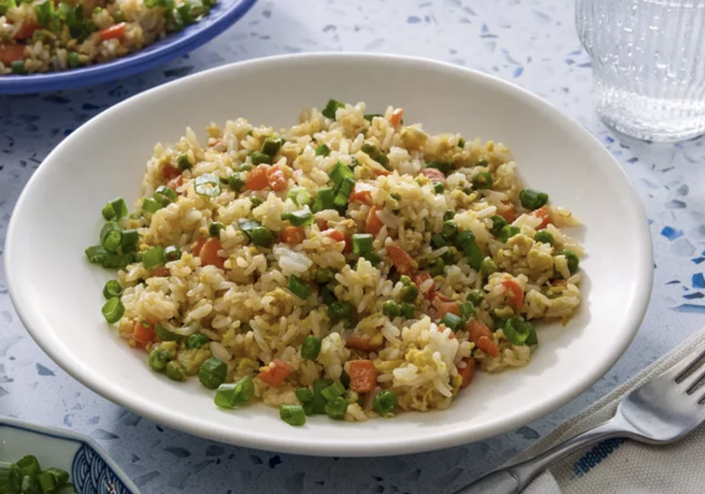

Fried Rice

Description
Fried rice is the ultimate family-friendly dish that yields maximum flavor without fuss. Loaded with tender sauteed veggies and delicious bits of scrambled egg, this top-rated recipe makes it easy to recreate a takeout favorite from home in just 20 minutes.
Ingredients
- ⅔ cup chopped baby carrots
- ½ cup frozen green peas
- 2 tablespoons vegetable oil
Steps
- Assemble ingredients.
- Place carrots in a small saucepan and cover with water. Bring to a low boil and cook for 3 to 5 minutes. Stir in peas, then immediately drain in a colander.
- Heat a wok over high heat. Pour in vegetable oil, then stir in carrots, peas, and garlic; cook for about 30 seconds. Add eggs; stir quickly to scramble eggs with vegetables.
Home